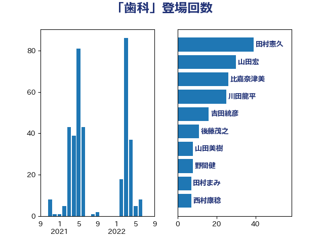

単語「歯科」

| 田村憲久 | 自由民主党 | 39 回 |
| 山田宏 | 自由民主党 | 30 回 |
| 比嘉奈津美 | 自由民主党 | 26 回 |
| 川田龍平 | 立憲民主党 | 25 回 |
| 吉田統彦 | 立憲民主党 | 16 回 |
| 後藤茂之 | 自由民主党 | 11 回 |
| 山田美樹 | 自由民主党 | 8 回 |
| 野間健 | 立憲民主党 | 8 回 |
| 田村まみ | 国民民主党 | 7 回 |
| 西村康稔 | 自由民主党 | 7 回 |
| 上月良祐 | 自由民主党 | 5 回 |
| 萩生田光一 | 自由民主党 | 5 回 |
| 中島克仁 | 立憲民主党 | 4 回 |
| 三木亨 | 自由民主党 | 3 回 |
| 前原誠司 | 国民民主党 | 3 回 |
| 大塚耕平 | 国民民主党 | 3 回 |
| 島村大 | 自由民主党 | 3 回 |
| 斎藤嘉隆 | 立憲民主党 | 3 回 |
| 櫻井充 | 自由民主党 | 3 回 |
| 田島麻衣子 | 立憲民主党 | 3 回 |
| 菅義偉 | 自由民主党 | 3 回 |
| 宮本徹 | 日本共産党 | 2 回 |
| 山本剛正 | 日本維新の会 | 2 回 |
| 梅村聡 | 日本維新の会 | 2 回 |
| 白石洋一 | 立憲民主党 | 2 回 |
| 福島みずほ | 社会民主党 | 2 回 |
| 竹谷とし子 | 公明党 | 2 回 |
| 菅家一郎 | 自由民主党 | 2 回 |
| 下条みつ | 立憲民主党 | 1 回 |
| 中川貴元 | 自由民主党 | 1 回 |
| 丸川珠代 | 自由民主党 | 1 回 |
| 伊佐進一 | 公明党 | 1 回 |
| 佐藤英道 | 公明党 | 1 回 |
| 塩田博昭 | 公明党 | 1 回 |
| 大島敦 | 立憲民主党 | 1 回 |
| 大西健介 | 立憲民主党 | 1 回 |
| 大野敬太郎 | 自由民主党 | 1 回 |
| 奥野総一郎 | 立憲民主党 | 1 回 |
| 横沢高徳 | 立憲民主党 | 1 回 |
| 橋本聖子 | 無所属 | 1 回 |
| 緑川貴士 | 立憲民主党 | 1 回 |
| 自見はなこ | 自由民主党 | 1 回 |
| 藤丸敏 | 自由民主党 | 1 回 |
| 足立康史 | 日本維新の会 | 1 回 |
| 野中厚 | 自由民主党 | 1 回 |
| 長妻昭 | 立憲民主党 | 1 回 |
| 高階恵美子 | 自由民主党 | 1 回 |